Rehabilitation¶
People and Resources
- Handbook of rehabilitation medicine
- pocketpmr.com
- People
- Ng Yee Sian
- Peter Lim
-
Kwok Kah Meng
-
Mothi Babu Ramalingam: ramalingam.mothi.baby@singhealth.com.sg, 97282526, 65767685
- Geoffrey Samuels
- Think about the rehabilitation physician like a conductor of an orchestra;
- Prognostication and education
- Address medical needs
- Optimising medical barriers
- Ascertaining medical safety / therapy precaution
- Rehabilitation: improving sustainable and practical function
- Rehabilitation physician: expert in disability and complications, lead interdisciplinary teams, advocate for the disabled
- WHO-ICF: health, impairments of body structure and function, activity limitation, participation restriction
- Retraining, compensation, and environmental modification
- Disability and function assessment: know basic ADLs and meaning of these measures
- Interdisciplinary team: current model for rehabilitation
- Disability advocacy is critical in our society
- Consider rehabilitation medicine for rotations and a future career
Questions
- Psychological trauma and rehabilitation is under rehab medicine?
- ADL is a fluid thing, do all patient qualify based on their abilities or physical condition?
- What is the evolution benefit of inter-hemispheric inhibition? What are we risking by over coming this inhibition?
General notes
- We don't see MD so much as more when we step into a US clinic.
- Certain specialities increasingly more important.
- Physicians used to be the therapists that we see today.
- 5 - 10 issues and diagnosis in one patient
- A bit of medicine, psychiatry, palliative care, surgery, interventional radiology; be all things to all people
Struggles
- Falls are a very common cause of TBI and disproportionately affects children and elderly
- Sarcopenia: ultrasound elastography for sarcopenia: better characterise the exercise capacity of individuals
General¶
Introduction¶
- Probably the most human of the medical disciplines
- Spans all ages and diseases
- Very complex technologies and devices, but also very much of creativity, good soul, and holding of hands
Rehabilitation is the easiest specialty to do badly and the hardest to do well. Roles of rehabilitation physician
- A competent general physician
- An expert on chronic disease, complications and disability
- Leaders of the multi-disciplinary team for the patient
- The advocate for the disabled and handicapped
The impact of disease lies not in death but in disability, because of the increased burden of care.
- All of us will be disabled in the last eight years of our lives
- After acute event, the medical need decreases and the rehabilitation need increases
History of rehabilitation medicine
- Hot springs / spa therapies
- Solarium for TB patients
- Took off in the World Wars for disabled soldiers with significant trauma; exercise became the third phase of therapy
- Also took off in the polio epidemic
- In Singapore, prof N Balachandran started it, where NCID is now
New development
- National rehabilitation network
- Rehab in US is very advanced
Beyond Healthcare to Health
- Health is a state of complete physical, mental, and social well-being and not merely the absence of disease
- Other we are considered disabled.
Principles of Rehabilitation¶
Assessment¶
Identify and evaluate the severity of the impairments, activity limitations ('disability') and participation ('handicap') restrictions.
"You can only find what you are looking for"
Disability assessment
- Go by ICF-domains of impairment, activity limitation, participation restrictions
WHO International Classification of Functioning, Disability and Health (WHO-ICF)
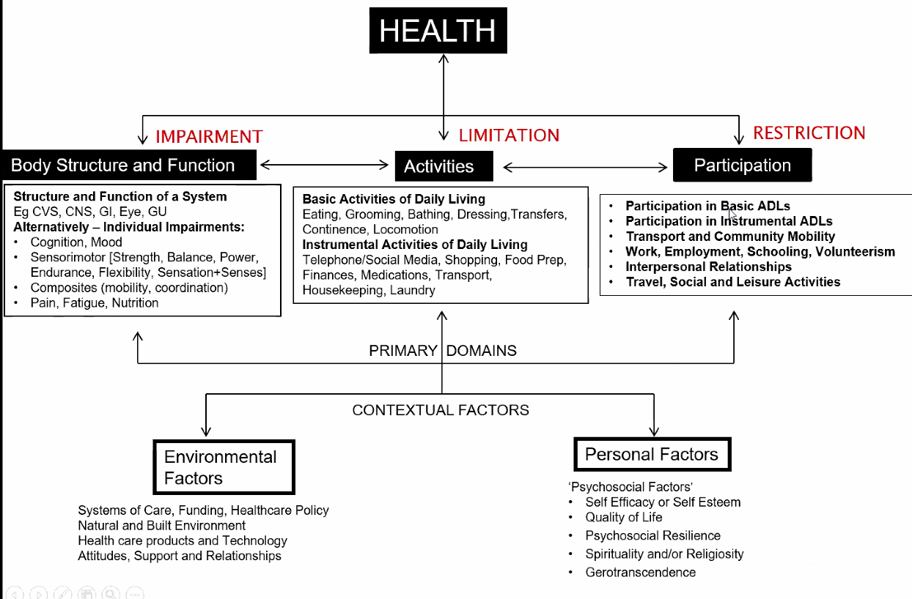
- Identify impairment, limitation, restrictions
- Give appropriate therapy
- Inter-dependent but separate domains
| Domain | outcome measurements |
|---|---|
| Impairment of body structure (impairment) Tests for strength and cognition |
Manual muscle testing; abbreviated mental test; mini mental state examination; clock drawing test |
| Activity limitation (disability) Tests for activities of daily liviing |
Functional independence measure Modified Barthel Index |
| Participation restriction (Handicap) Tests for participation in the community; Quality of life | Community integration questionnaire; SF-36, EQ5D |
- Application
- Use ICF to measure long-term performance of COVID19 patients
- 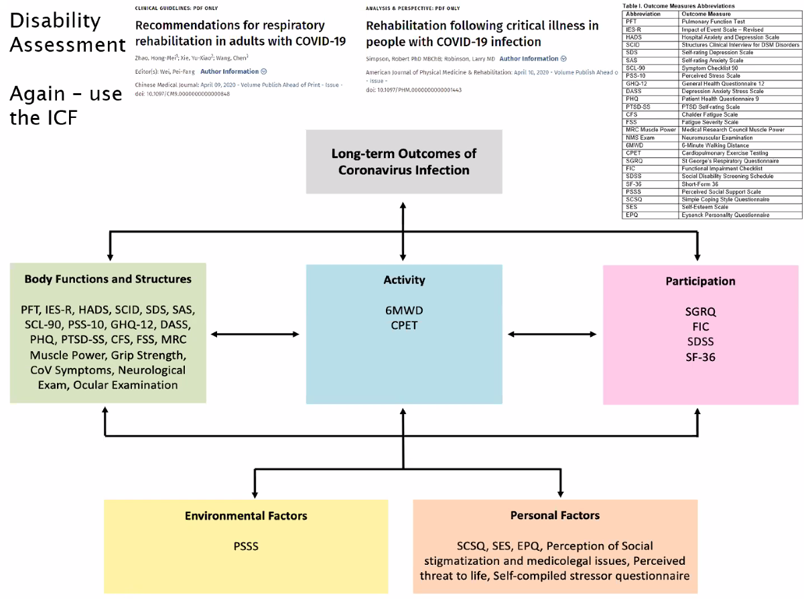
Provide solutions¶
To handle impairments, activity limitations, and participation restrictions by:
- Retraining
- Compensation
- Environmental modifications
A large range of medical and non-medical modalities
Outcomes¶
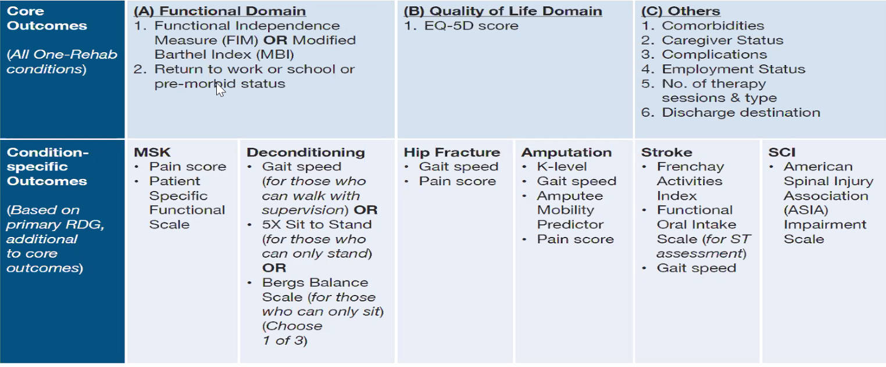
Prognosticate¶
Prognosticate condition as well as work through a multidisciplinary team to achieve the optimal outcome and prevent complications.
Recovery often depends on 5 big categories:
- demographics: age, gender, race, occupation
- Lesions and disease characteristics: size / location of stroke, level of paresis, level of amputation
- Co-morbidities and complications: diabetes mellitus, cancer, depression, UTI, pneumonia, biochem
- Therapeutic interventions: acute and rehabilitation interventions
- Social and environmental: mood disorders, family support, health care systems, environmental support
ADLS¶
Basic ADLs¶
Def: Activities critical to independent and basic self-care
They must comprise at least 2 ADL sub-groups of basic mobility and self-care activities.
- Self-care: feeding, grooming, washing, dressing, toileting
- Mobility: transfers, locomotion (walking / use of wheelchair)
Some also consider bladder, bowel continence, and functional cognition (comprehension, expression, memory, social interaction, and problem solving) as BADLs.
Scales for grading BADLs¶
- Barthel Index
Practical use of BADL assessment¶
- Eldershield (severe disability) assessment - funds the daily needs of disabled people
- Functional assessment report for foreign domestic work or income tax levy, vehicle handicapped license
Humanities¶
- AVATAR has good clips on transfer for spinal cord injury patient
- Amputee can be independent
Measurement of Improve Rehabilitations¶
- Established that it is the most effect and cost-efficient method for disability
- Difficult to do RCTs for many reasons (Variety of outcomes, spontaneous recovery, ethics issues)
- Introduction to 3 outcomes based on the basic ADL scales (MBI, FIM)
- Functional gain = final MBI - initial MBI
- Functional effectiveness = functional gain / ( Max MBI - initial MBI) *100
- Functional efficiency = functional gain / time in the program
Some scores
- MBI
- FIM
Concept of Teams¶
- Multi-disciplinary: team members function as independent specialists toward common goal. Schedule meetings. May work in parallel e.g. outpatient program.
- Inter-d: Shared knowledge and synthesis between specialists: preferred rehab model. Group responsibility, problem solving.
- What is shared knowledge in rehab?
- Physio has knowledge about meds that the doctor can prescribe
- Doctor knows about basic knowledges
- Trans-disciplinary: No further specialist distinction, co-treatment - "ie.. transcends boundaries" - leads to innovative solutions. Less in healthcare system.
- What is trans-disciplinary work in rehab?
- Work very closely with engineers
- Gait analysis, rehab robots, apps
- Design and architecture
Members of the Rehab Team
- Patient and family
- Most important members
- Rehabilitation medicine physician
- Earlier slide, expert in general medicine, disability and complications, team leader, disability advocate
- Rehabilitation nurse
- Specialist in rehab, prevention of complications, particularly continence, pressure sores, patient and family education, often takes role of coordinator
- Physiotherapist
- Lower limb, gross motor, focus on mobility, particularly ambulation, balance, exercise, strength, posture, endurance, applied modalities: heat, electrical, therapeutic ultrasound
- More on impairment of body structure and function
- Occupational therapist / vocational therapist
- Upper limb, find motor, activities of daily living, vocational and school rehab, community / leisure, wheelchair and powered mobility
- More on activity limitation and participation restrictions
- Speech therapist
- Cognition, communication, swallowing impairments and function, hearing
- Medical social worker
- Financing, insurance and funds, counselling - grief
- Prosthetist and orthotist
- Clinical psychologist
- Case manager / coordinator
- Music therapy / art therapist / recreational therapist
- Other specialists including family medicine / neurosciences / MSK specialists / psychiatrist
Interdisciplinary meetings¶
- Generally once a week in inpatient rehabilitation clinics
- Patient and family education needs, eg. Prognosticating, education, family meetings
- The patient's progress: reviewing a basic ADL scale e.g. MBI FIM
Where can we get rehab¶
Depends on complexity and rehabilitation intensity / frequency.
| Tier | Daily Rehab | Non-daily Rehab |
|---|---|---|
| 3 | Medically complex and low volume conditions requiring intense rehabilitation; All spinal cord injury (SCI) and traumatic brain injury (TBI) cases. Likely requires daily rehab specialist physician review AND OR complex nursing care AND OR four or more types of AHPs to address key rehabilitation needs; Care may be delivered at Acute Hospital Inpatient Rehabilitation units | Medically complex, including all SCI and TBI cases AND low volume, complex conditions (such as burns, head and neck cancer, multiple trauma with injury severity score of more than 15, soft tissue operations) requiring rehabilitation. Likely requires regular specialist review. Care may be delivered at acute hospital outpatient rehabilitation services. |
| 2 | Generally, medically less complex than Tier 3D; more common conditions requiring rehabilitation. These include all other conditions requiring daily rehabilitation but do not fall under Tier 3D. Likely: does not require daily physician review; does not require complex nursing care, but may still require nursing intervention from qualified nurse; requires three or fewer types of AHPs to address key rehabilitation needs. Care may be delivered at community hospital inpatient rehabilitation. | Generally, medically less complex, more common conditions requiring rehabilitation. These include all other conditions requiring outpatient rehabilitation but do not fall under rehabilitation tiers 3 or 1. Care for active rehabilitation may be delivered at Senior Care Centre, active ageing hub, Day rehabilitation centre, polyclinic, home-based therapy etc. |
Training¶
- Through internal medicine residency
- Through family medicine residency
- Senior residency in rehabilitation medicine ± HMDP (US or Australia)
- 2 - 3 senior residency position in SingHealth
- Staff registrar option - closing -> diploma in rehabilitation medicine
- US graduate ME program: ACGME finish internship
- Residency: 3 years in accredited training center; fellowship 1 - 2 years, NIDRR or clinical; private practice $$$ / Academic Medical Centre
Discharge Options¶
Admission to Inpatient rehab¶
- Rehabilitation needs: complex multidisciplinary needs
- Medical stability: BP control (180/110 as upper bound for ischemic, 160 SBP for hemorrhagic) and cardiac status (safety of exercises)
- Ability to participate: severe cognitive deficits, tolerance to therapy, willingness to engage
- Attainable goals: premorbid function, patient/family education and communication, discharge destination and care plans
Proactively think about how to mitigate these activities.
Neurological Conditions¶
Traumatic Brain Injuries¶
Pathophysiology of Injury
- Primary injury: occur at the time of impact
- Associated with acceleration and deceleration force
- Rotational force
- Focal injury
- Skull fractures
- Intracranial haemorrhage
- Cortical contusions
- Lacerations
- Penetrating injuries
- Diffuse axonal injury (DAI) - poorer prognosis
- Changes within the axonal membrane
- Uncontrolled calcium influx at the ion channels near nodes of Ranvier
- Disrupt cytoskeleton, and hence axon, starting from the distal portion
- Coup and contracoup lesions
Causes
- Road traffic accidents: younger age group
- Falls: especially in the elderly (>75 year old) and the very young
- Work related accidents: construction workers in Singapore
- Recreational activities: sports e.g. football, basketball, baseball, wrestling
- Crime related: gun shot wounds
Statistics from USA
- In 2013 falls were the leading cause of TBI
- Falls accounted for almost half of all TBI related emergency department visits
- Falls disproportionately affected children and older adults
Risks
- 2 peak of incidence: 15 to 24 y/o and > 65 y/o
- Males > females
- Socioeconomic status: poor, unmarried, minority race, inner city
- Medical history: substance abuse, history of brain injury
Important to identify the risk factors when clerking a patient
Acute TBI management
- Adequate cardiopulmonary resuscitation is the first and most important priority initial care of the brain injured patient
- Control the ICP with the aim of maintain an adequate cerebral perfusion pressure and oxygen in the brain
- Head elevation and intravenous Mannitol reduces ICP
- Mass lesions, subdural or extradural haematomas, contusions etc which are causing raised ICP may need urgent surgical evacuation
- Treatment of anticonvulsants can reduce the incidence of early post-injury seizures in the first 2 weeks.
Caution
- Do not use hypertonic saline: worry Na fluctuation which may result in neural swelling and central pontine myelinolysis
Strokes¶
- 8000 strokes in a year; 60 - 65% need rehabilitation
- 25% improvement in moderately disabled stroke patients through inpatient rehab
Case: 45 yo man with left MCA stroke¶
- Impairments:
- Strength ⅖ in the right upper and lower limb, with foot drop.
- Reduced sensation on the right side
- 'language impairment' or 'communication impairment'
- Erection and sexual function
- Prone to blood pressure, DM, spasticity, neurogenic bladder / bowel, swallowing, autonomic dysfunction (orthostatic hypotension)
- Activity limitations
- Basic ADL
- FIM score 40
- Requires moderate assistance in eating, bathing, dressing, transfers
- Stands with support
- Participation restrictions / social history
- Previously worked as a computer analyst in the financial sector
- Wife = teacher, 2 younger children in secondary school
- 4 room HDB apartment
-
Environmental / personal factors: depressed over catastrophic illness, expresses financial concern
-
Mechanisms of Stroke Recovery
| feature | Neurological Recovery | Functional recovery |
|---|---|---|
| Domain | Body structure and function | Activities |
| Mechanisms | Early: 1. Post-stroke edema; esp in hemorrhagic stroke 2. Reperfusion of ischemic penumbra; 3. Diaschisis Late: CNS re-organisation: neuroplasticity |
Influence by neurological recovery, but not dependent on it; Includes compensation and adaptive equipment |
| Time course | Peaks in the first 3 month; slower rate till 6 months; Up to 5% may recover up to 1 year (or more) | May continue for months after completion of neurological recovery |
- Functional MRI: radioactive glucose as contrast; after injection, patient is asked to do a task e.g. raising the right hand; this will result in active update of glucose at the related brain regions; Finally MRI is done and the relevant parts of the brain 'light up'.
-
Neuroplasticity changes in response to environment that results in changes in function.
- Neuromodulation: pharmacological (SSRI FLAME trial), repetitive transcranial magnetic stimulation (basis inter-hemispheric inhibition)
- Motor re-learning: task-specific, intensive, repetitive
- Fluoxetine is still routinely given to all stroke patients for stroke recovery; the recent FOCUS trial failed to show efficacy in improving functional outcomes - only for ischemic stroke, SSRI increase risk of hemorrhagic, and dense hemiparesis
-
Key Prognostication Factors in Stroke Recovery
-
Why do we want to prognosticate?
- Need to know: patient and family
- Management: Discharge care planning, Rehabilitation planning
- Restrictive vs compensatory strategies
- Resource planning (e.g. length of stay, siting of care)
- Clinical outcome
-
Prognostic Factors
- Disease Factors
- Stroke severity (most important)
- NIHSS score
- May not correctly predict posterior circulation strokes because it does not measure all impairments
- ≤6 independent living
- ≥16: severe disability / death
- "Time factor": > 22 at 24 hours OR >16 at 7 - 10 days: poor outcomes
- Imaging modalities
- Infarct volume (on DWI)
- Complete occlusion of large intracranial artery
- Insular region infarcts
- Degree of cerebral edema (midline shift)
- Poor collateral blood flow
- Specific deficits
- Aphasia
- Neglect
- Sensory loss
- Hemianopia
- Stroke etiology
- Lacunar is better for 1st year
- Cryptogenic: better
- Treatment / Recovery Factor
- Access to early rehabilitation
- Acute complications (e.g. pneumonia)
- Post-stroke depression
- Rate of early recovery
- UL: active finger extension and grasp release, shoulder shrug and abduction at day 2 predicts good arm/hand recovery at 6 months
- LL: maintain sitting ≥ 30 sec + muscle contraction in paretic limb
-
PREP Algorithm
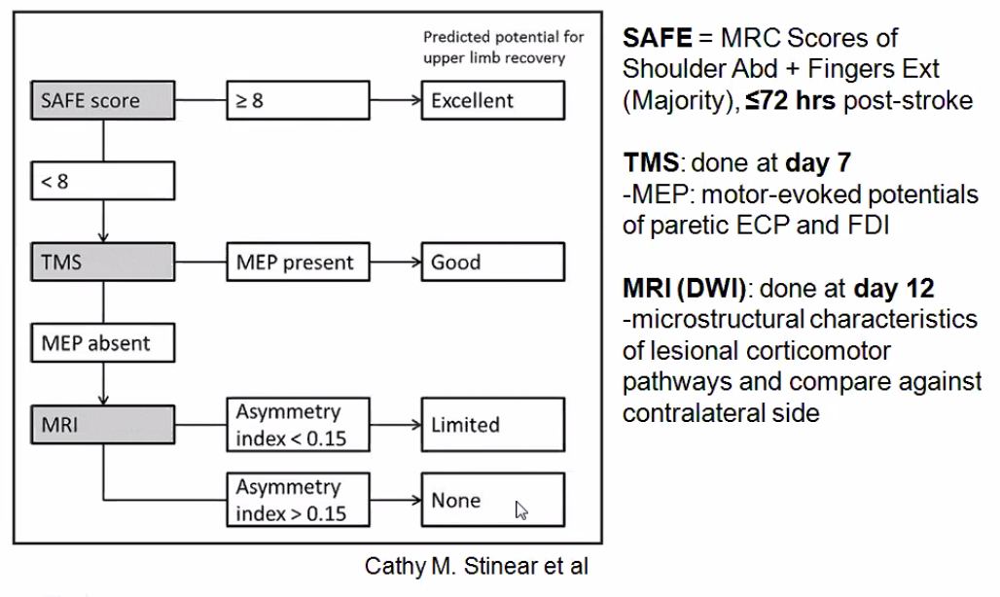
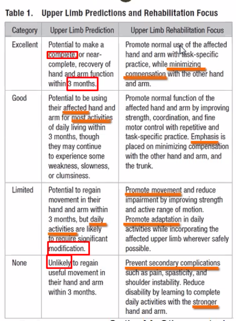
The intensity of PT and OT is based on achievable goals. If the type of stroke is very severe goals are aimed at reducing care burden , prevent complications. If patient is too unwell for rehabiliation from medical point of view stabilisation is of prime concern.
Compared to ARAT Score (3 months)
- Predicted minimum level: 80%
-
Predicted exact level: 64%
-
Central Rehabilitation Framework
-
Refer to International Classification of Function (ICF)
- Understanding our patients
- Guiding comprehensive considerations: systematic classification under key domains
- Generation of rehabilitation "problem list": prioritisation
- Treatment
- Facilitates goal setting: helps patient /family conceptualize; Inter-team communication
- Formulating multi-focal strategies: multidisciplinary team approach on multiple domains?
- Research
- Define outcome measures: systemic precision
-
Overview on Roles of the Rehabilitation Team
Questions
- Is this common
- What other impairments do you expect
- BADLs: personal hygiene, continence management, dressing, feeding, ambulating
- IADLs: companionship and mental support, transportation and shopping, preparing meals, managing a person's household, managing medications, communicating with others, managing finances
- Give example of impairment - how to measure, what is retraining, compensation, environmental modification
- 'language impairment' or 'communication impairment'
- Think about compensatory
- Social programs / funding
- HDB (mortgage)
- Children's schooling
- Wife's role in family
- Depression and psychiatry issues
- Discuss on holistic management
- Interdisciplinary
- Addressing both activity limitation, participation restrictions and contextual factors
- What stroke advocacy support groups do you know?
IncoSpinal Cord Injuries¶
PD/ Movement Disorders¶
Neuropathies / Myopathies¶
Motor Neuron Disease¶
Multiple Sclerosis¶
Vestibular Rehab¶
Musculoskeletal Rehabilitation¶
- Basic skills - assess and diagnose MSK problems
- Competency to assess specific common or urgent MSK problems
- Theoretical background of the conditions and their management
- Core knowledge to support diagnosis and management, including basic sciences
What are MSK conditions
- MSK conditions comprise more than 150 diagnoses that affect the locomotor system: muscles, bones, joints, and associated tissues such as tendons and ligaments
- Acute or chronic
- Typically present with pain and limitations in mobility, dexterity, and functional ability
-
Reduced ability to work and participate in social roles with associated impacts on mental wellbeing, and at a broader level impacts on the prosperity of communities
-
OA, RA, gout, low back pain, neck pain, and all other MSK disorders
- MSK disease cause 21.3% of the total years lived with disability in the world second to mental and behavioural problems
Common causes of MSK conditions
- Awkward posture
- Repetitive stress / overuse
- Physical injury
- Aging
- Nutritional deficiency (low Ca, Vit D, Vit E)
- Inflammatory conditions
Physical Exam
- Inspection / observation
- Range of motion: active THEN passive
- Palpation
- Neurological Exam
- Provocative Testing
Goals
- To be able to perform an appropriate examination of major joints (hip, knee, humeroscapular) and small joints such as finger joints
- To identify and characterise pain, swelling, dislocation, displacement, deformity, muscle wasting, weakness, abnormal movement,
- To be able to perform an appropriate examination for musculoskeletal trauma (inspection, active, and passive range of motion, palpation, and distal neuromuscular status assessment)
- Goals to be able to
Investigations
Fracture Management
- Prevent further injury
- Maintain strength
- Reduce pain
- Maintain intact neurovascular
*
Bursitis
Dislocation / subluxation
Lower Back Pain¶
Defined a pain localised below the line of 12 rib and above the inferior gluteal folds, with or without leg pain; 20-44% of the working population suffer > 1 acute episode within 1 year and lifetime recurrences of up to 85%.
- Most common MSK problem globally;
- Leading cause of activity limitation and absenteeism from work
- Estimates of annual healthcare expenditures for low back pain the US exceeds USD90 billion annually, not even taking lost productivity and business costs into account
Relevant Anatomy
- Canal size decrease with extension and increase with flexion
- Intradiscal pressure increase with forward bend or seated with arms unsupported Facet load increase with extension and decrease with flexion
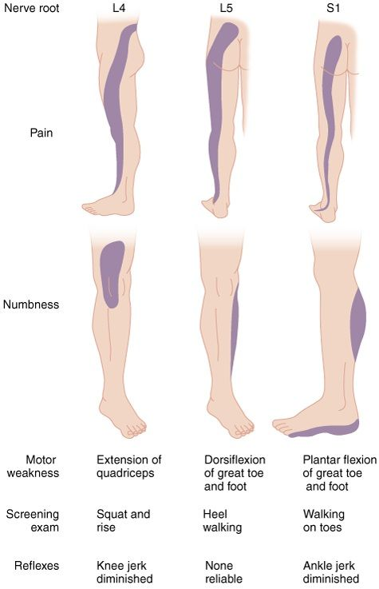
Classifications
-
Specific (suspected pathological cause) or non-specific (about 90% of cases).
-
MSK
Discogenic causes: herniated disc, spinal stenosis, degenerated or bulging disc
- Tend to happen posteriorly due to pressure sources, and the anterior part of the nucleus pulpous is thicker
- Greatest motions occurs at L4-5 and L5 - S1
-
Systemic
-
Psychological
-
Others
- Herpes zoster radiculopathy
- Diabetic radiculopathy
- Referred from hip (kinetic chain)
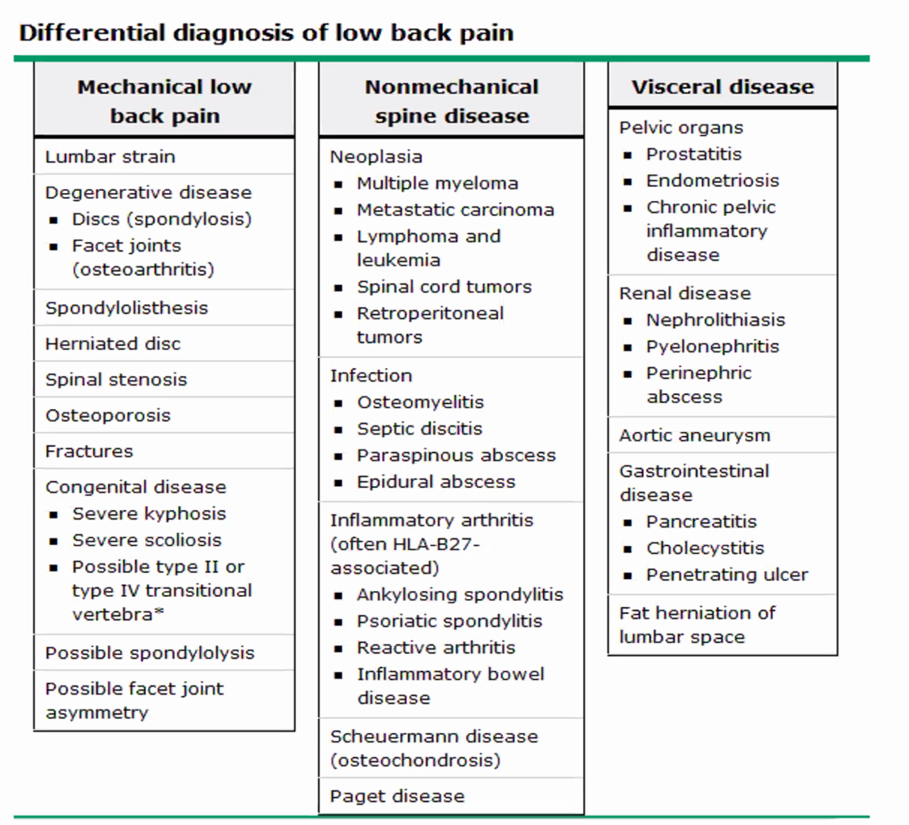
- acute if it lasts <6 weeks; subacute if between 6 weeks and 3 months; and chronic when > 3 months.
Prognosis
- Most episodes of low back pain settle after 1 - 2 weeks but many have a recurrent course
- Frequently, low back pain never fully resolves, and patients experience exacerbations of chronic low back pain
Clinical Visit
- Observe gait (5 - 10s)
- Gait: Trendelenburg, antalgic, forward flexed, circumducted, foot slap, etc
- Posture: increase or decrease lumbar lordosis / thorax hypnosis etc can affect gait, so always look at it as a whole
- History taking (5 min)
- Basics
- Prone -> facet pain, lateral HNP, systemic process
- Sitting -> annular tear, HNP
- Standing -> central stenosis, facet syndrome, lateral HNP
- Raising from sitting - . Discogenic
- cover red flags: nee d further investigation
- History
- Pain worse at rest or at night
- Prior Hx CA, chronic infection
- Age > 50
- Duration pain > 1/12
- IV drug use
- Corticosteroid use
- Change bowel bladder habits / urinary retention, perineal numbness
- Unexplained fever
- Unexplained weight loss
- Examination
- SLR +ve
- Percussion tenderness over lower spine
- Abdominal rectal, or pelvic mass
- Focal neurological deficit, particularly if progressive
-
Cover yellow flags: psychosocial barriers that inhibit recovery from back pain
- Inappropriate perception of back pain, e.g. belief that back pain is harmful and disabling, that it will last forever etc
- Belief that passive activity such as bed rest is better than staying active
- Lack of support at home and social isolation
- Mental health problems such as depression, anxiety and stress
- Problems at work
- Claims for compensation and benefits
-
Physical exam (6 min) - active ROM, passive ROM euro exam LL, SLR femoral stretch faber waddle signs: Look Feel Move, Provocative Test
-
Feel
- Spinous process
- P-A glide -> discogenic pain or vertebral body (compression fracture)
- Step-off -> spondylolisthesis
- Paravertebral
- Trigger / tender points (myofascial pain without muscle strain), TAUT muscle band, muscle spams, z-joint mediated pain
- Sacral sulcus: SIJ
- Sciatic notch / piriformis / gluteal tenderness
- HNP, LSS, SIJ, piriformis syndrome, myofascial pain, L2 radiculopathy, sciatic N.
- Referred from hip joint
-
Move
- Motor Exam
Levels Motion L2, 3 Hip flexion (iliopsoas) L 3, 4 Knee extension L 4, 5 Ankle dorsiflexion L5 Extensor hallucis longus S1 Heel raises -
Provocative (to elicit pain)
- Straight Leg Raise; use ankle dorsiflexion to increase the symptom
- Slump test
- Femoral Stretch
- Patrick's Test / **F**lexion **Ab**duction, **E**xternal **R**otation **T**est
- Waddell's test for nonorganic physical signs
- Distraction: discrepancy between findings on sitting and supine SLR tests
- Regional disturbances
- Overreaction
-
Recommend ix
-
Recommend management
-
LBP common -rarely serious
- Can improve quickly
- Will often recur
- Anatomic findings do not equal pain
- Over diagnosis + over treatment increases anxiety
- Avoid saying "if therapy doesn't work, then we will do surgery"
Management
- PT
- Exercise (stabilising training) - flexion exercises
- Neutral position
- Soft tissue mobilization
- TENS, electrothermal therapy
- Complementary measure
- Spinal manipulative therapy
-
Multidisciplinary treatment programs
-
Interventions
- Neural blockage: elective nerve root blocks, facet joint blocks, medial branch blocks
- Neurolytic techniques: radio frequency neurotoxins, pulse radio frequency
- Stimulatory techniques: spinal cord stimulation, peripheral stimulation
- Spinal cord
Hand/foot disorder¶
Joint Replacements¶
Injuries and fractures¶
Arthritis / CT diseases¶
Amputation¶
Common causes
- Peripheral vascular disease: DM
- Disease
- Thromboembolic disease, vasculitis
- Infections e.g. necrotising fasciitis
- Tumor
- Road traffic accidents
Amputations
- Below knee
- Above knee
- Knee disarticulation (Gritty-stokes; through knee)
- Symes
- Transmetatarsal
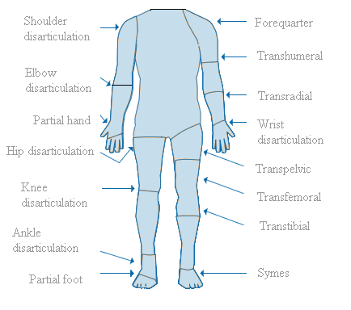
Phases of rehabilitation
- Pre-prosthetic
- Education, prognostication, and goal setting
- Immediate post op
- Wound management and on time suture removal
- Pain management
- 3 weeks
- Pre-casting
- Stump shaping
- 6 weeks
Prosthetic
- Prosthetic gait training
- Gait training and prosthetic adjustment
- 3 months
- Community re-integration
- Community rehabilitation including return to work/driving rehabilitation
- 6 months or earlier
- Maintenance
- Save up for next prosthesis
- Amputee support group
- Proficient care for underlying medical conditions
- 3 years
Role of a rehabilitation physician
- Holistic assessment of medical and functional status
- Prevention and on-time follow-up of complications
- Prescribe appropriate prosthesis and follow-up
- Set rehabilitation goals
- Educate and explain prognostication
- Advocate for suitable integration back to society
- Medical legal representation on insurance and compensation cases
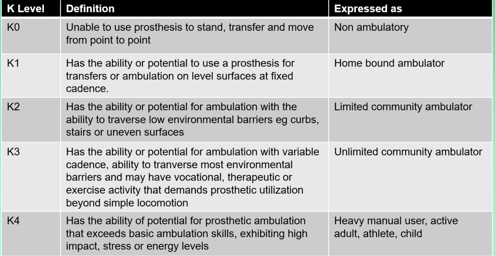
Prognosticate with
- Amputee Mobility Predictor (AMP)
Energy expenditure
- Below knee: unilateral 10 - 20% and bilateral 20 - 40%
- Above knee: unilateral 60 - 70% and bilateral is >200%
Management
- Fitting the prosthesis
- Post-operative prosthesis
- Preparatory prosthesis
- Definitive prosthesis
- Initial evaluation -> casting -> test socket fitting -> fabrication
- Do not use: massage and moxa stick
- Desensitization technique
- Stroking with soft brush following by massage
- Applying cold towel intermittently with ice cubes
- Deep pressure with finger tips
- Secondary prevention
- Nutrition is very important
After total hip arthroplasty
- No crossing of legs
- No squatting
- No turning of leg inward
- CAN bend so long as the angle doesn't go beyond 90
Major Syndromes¶
Osteoporosis¶
Vascular Disease¶
Sexuality and Rehabilitation¶
Pressure Ulcers¶
Bladder and Bowel Function¶
Depression¶
Cross-specialty Rehabilitation¶
Sports Medicine / Disabled Sports¶
Palliative Care¶
Cardiac Rehabilitation¶
Pulmonary Rehabilitation¶
Geriatric Rehabilitation¶
Frailty¶
Frailty is a state of increased vulnerability to poor resolution of homeostasis following a stress, which increases risk of catastrophic declines in health and function, as well as adverse outcomes including falls, delirium, and disability. It is a long established clinical expression that implies concern over an older person's vulnerability and prognosis.
Both genetic and environmental factors are implicated, resulting in cumulative molecular and cellular damage. Reduced physiological reserve include brain, endocrine, immune, skeletal muscle, cardiovascular, respiratory, renal activities. Along with poor physical activity and nutritional factors contribute to frailty. When a frail patient experience a stressor, the patient can fall, become delirious, experience fluctuating disability. These increases the care needs, require admission to hospital, and admission to long-term care.
Fried's Phenotype Model of Frailty
Frailty has been defined by Fried et al. as meeting three out of five phenotypic criteria indicating compromised energetics:
- Low grip strength
- Difficulty initiating movements
- Reduced walking speed
- Fatigue
- Involuntary weight loss of 10 lbs or more in the last 6 months
Fit: 0; Pre-frail: 1 - 2; Frail: 3 or more
Practically: check records for weight loss, test grip strength using some device, check gait, ask for symptoms of fatigue
Clinical Features
- Non-specific: fatigue, weight loss, delirium,
- Frail brain: cognitive impairment
- Frail endocrine system
- Frail immune system
- Frail skeletal muscle system
Clinical Outcome Measures
- Timed up and go test
- Edmonton frail scale
- Changes in health, end-stage disease and signs, and symptoms scale
- Comprehensive geriatric assessment
Differential
- Deconditioning
- Physiological Aging
Management
- SG frailty screening: IPPT-s inspired by short physical performance battery
- Components: Back scratch test, Gait, Physical and mobility test, Timed-up-and-go
- Interactive discussion on interventions including exercise and nutrition
- Think about activities that patients do and what they like
- Resistive exercises: stationary bicycles at old folks exercise place, resistance-bands
- Consider vitamin D level screening. kiv replacement if required
- Assessment for ability to perform ADLs, encourage continued community involvement/activity
- Assess cognitive level to look for cognitive decline, eg. MCI, dementia
- OT review home environment
#### Sarcopenia
Sarcopenia is a syndrome characterized by progressive and generalized loss of skeletal muscle mass and strength and it is strictly correlated with physical disability, poor quality of life and death. Risk factors for sarcopenia include age, gender and level of physical activity.
How muscle works -> An analogy from fuel, car engines
- Engine-motor units
- Parts of engine - protein parts of muscle
- Fuel and combustion - carbohydrate conversion and oxygen
- Power generated - number of motor units, force generated per motor unit influenced by quality of motor units, endurance of motor units (affects functional activties)
- Not running the engine - 'use it or lose it'
Dallas Bedrest and Training Study
In 1966, 5 healthy 20-year-old men were studied extensively at baseline, after 3 weeks of bedrest, and after 8 weeks of intensive dynamic exercise training.
| after bedrest | after training | |
|---|---|---|
| average maximal oxygen uptake | 27% decline | 45% increase |
| maximum cardiac output | 26% decline | 40% increase |
Diagnosis / Management
- Ultrasound elastography: under investigation
- Work-up a cause of sarcopenia
- Assess and treat reversible causes of muscle damage
- Ordering a DEXA scan
- Institute practical measures to limit extent of Sarcopenia (inpatient)
- Sit up and sit out of bed regime: to train and maintain trunk control
- Institute a regime of resistive exercises that the patient can tolerate
- Evaluate and Address Impact of Sarcopenia on Activities of Daily Living
- A inpatient key consideration is if the patient can be discharged safely
- Think about long term maintenance regime of nutritional support and Resistive Exercise and Aerobic Exercise Prescriptions
Deconditioning¶
Deconditioning is a complex process of physiological change following a period of inactivity, bedrest or sedentary lifestyle. It results in functional losses in such areas as mental status, degree of continence and ability to accomplish activities of daily living.
Patient in high dependency unit for 2 weeks for severe cholangitis
- Possible causes of weakness in the patient
- Deconditioning
- Medical issues: hypoglycemia, anemia, endocrine abnormalities
- Critical illness myopathy, rhabdomyolysis following severe conditions
- What should be done initially in the general ward
- Early mobility
- Workup to rule out critical illness myopathy
- Establish goal of rehab with patient and family
- postural HTN, CBC, RP, gait, strength, functional assessment ( ADL)
- Communication: Contact family, discuss patient's condition and whether any family/caregiver help needed
- Early mobility - getting out of bed, slowly increase walking distance, transfer techniques if patient is unable to walk
- Bed bound exercises to train muscle groups important for basic transfer and ambulation - Refer to PT for assistance on the matter
- How would you assess the patient in terms of Activity Domain
- Check with nurses on his ability to do ADLs e.g., toileting, transfers
- Check with PT on his progress during the PT sessions
- What should be the discharge disposition / post discharge rehabilitation management
- prior to discharge, assess and ensure competency in basic ADLs ensure that infective markers are gone and check LFT, Bilirubin, renal panel trends continue to address deconditioning via regular exercise program continue to address potential weight loss via ensuring adequate calories per day provide financial counselling and support for prolonged hospital stay advised to seek medical attention if infective sx return
- 4) Discharge disposition/post discharge rehabilitation. dependent on level of social support a) inadequate - consider inpatient rehab -> can do in community hospital with regular PT/OT review b) adequate support where caregiver can bring patient for regular rehab (dependent on severity)-> caregiver training + OT home review+ regular outpatient rehab at therapy centres / community hospital (3times a week min)
Cancer Rehabilitation¶
Assessment¶
Cancer specific issues¶
Looking into the survivors mind
- Unprepared for the future
- Side effect awareness
- Under recognised issues
- Under treated impairments
- So many people in the care team! Coordinating flow of care
Cancer - phases of rehabilitation that keep going around and around
- Preventive rehabilitation
- Restorative rehabilitation
- Supportive rehabilitation
- Palliative rehabilitation
Model for thinking about cancer patients
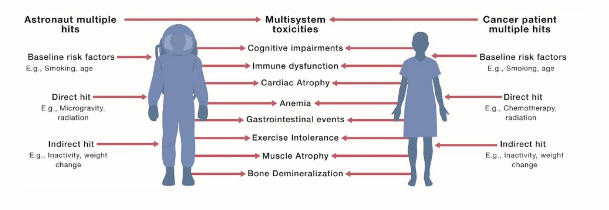
Colorectal cancer
- Peripheral neuropathy
- Bowel dysfunction
- Sexual dysfunction
- Body image issues
Leukemias and lymphomas
-
fatigue
-
Cardiac dysfunction
-
Cognitive impairment
-
Fertility
-
Sarcopenia
- More aggressive treatment with curative intend
Prostate cancer
- Bladder dysfunction
- Bowel dysfunction
- Pelvic floor issues (surgery, radiation)
- Sexual dysfunction (Surgery, hormonal treatment)
- Osteoporosis (ADT)
Major difference from standard rehabilitation
- Ongoing treatment
- Uncertain prognosis
- Varied cancers causing varied impairments
- Progression despite treatment
- Multimodal treatments (Chemo, RT, Surgery)
Management
- Focused fatigue history
- Disease status
- Treatable contri
Jewett Brace
Spinal Splint
Halo vest
Soft collar
Impairments and its implication on QOL¶
Activities¶
Pediatric Rehabilitaiton¶
Burns Rehabilitation¶
HIV / Transplant¶
Amputation¶
Cases¶
¶
IRAT Notes¶
- Spinal Cord Injuries
- Posterior cord syndrome
- Central cord syndrome
- Brown-sequard syndrome
- Anterior cord syndrome
- Fried's criteria for Frailty
- Management of Sarcopenia
- Assess and treat reversible causes of muscle damage
- Ordering a DEXA scan
- Institute a regime of resistive exercises that the patient can tolerate
- Initiation of an acupuncture regime
- WHO-ICF there are different inabilities
- Impairment of body structure and function
- Multimorbidity
- Activity limitation
- Participation restriction
- Complication of spinal cord injury
- Different types of exercises
- Retraining strength
- Compensation
- Environmental modification
- ADL
- Instrumental ADL
- Basic ADL in Rehab is important because it is significantly associated with?
- Modified Barthel Index and improvement
- Collaboration
- Interdisciplinary
- Cross disciplinary
- Multidisciplinary
- Transdisciplinary
- Interdisciplinary
- Different roles
- Recreational therapist
- Physiotherapist
- Occupational therapist
- Case coordinator
- Prosthetist and orthotist
- Different inpatient rehabilitation options
- Skilled nursing facility
- Community hospital (i.e. Tier 2D)
- Neurosirgical acute unit
- Acute hospital rehabilitation unit for complex patients (i.e. tier 3D)
- Day hospital with rehabilitation services
- Regarding post-stroke recovery
- What kind of recovery can happen
- What is the functional prognosis
- Motor recovery
- Post stroke bladder management
- Post Stroke rehabilitative interventions
- Amputee prognostication
- K2 is
- Desensitization techniques for amputee stump
- What kind of amputation requires the most energy expenditure for ambulation
- Post joint replacement rehabilitation
- How
- When
- Knee Osteoarthritis
- TBI
- Coup-contre coup injuries
- Possibility of a good recovery is very unlikely after what period of post-traumatic amnesia
-
Classification distinguishing between mild and moderate injuries
-
Tetraplegic
- Modified AShworth Scale (MAS 3)
- Cancer-related fatigue
Lecture Notes¶
Exercise Prescription¶
Exercise is structured physical or mental activity performed to maintain, restore, or increase normal capacity. Physical exercise involves activities that maintain or increase muscle tone and strength, esp. to improve physical fitness or to manage a handicap or disability.
An exercise prescription is a basic plan or program of activity designed by professionals to enhance the well-being of a patient. It may also be called by the names exercise on prescription, exercise is medicine, green prescription, or exercise programming.
Components of exercise prescription¶
An exercise prescription generally includes the following specific recommendations:
- Type of exercise or activity (eg, walking, swimming, cycling)
- Specific workloads (eg, watts, walking speed)
- Duration and frequency of the activity or exercise session
- Intensity guidelines – Target heart rate (THR) range and estimated rate of perceived exertion (RPE)
- Precautions regarding certain orthopedic (or other) concerns or related comments
Types of Exercises¶
| Types of Exercise | Description |
|---|---|
| Aerobic / Cardiovascular | bicycling (stationary or routine), walk-jog protocols, swimming, and other active recreational or leisure sports |
| Strengthening / Resistive Training | free weights or standard equipment should be performed 2-3 times per week; 8-10 exercise sets that consist of 10-15 repetitions per set (including arms, shoulders, chest, trunk, back, hips, and legs) and are performed at a moderate intensity |
| ROM / Flexibility Exercise | For spasticity |
| Balance / Neuromotor Training | |
| Task-specific Training |
Overview of Physical Activity¶
Physical activity prescription is a 4-step process:
-
Safety screening
-
Determining readiness for change
-
Provision of a simple physical activity prescription
-
Provision of a more complex, customized physical activity prescription.
-
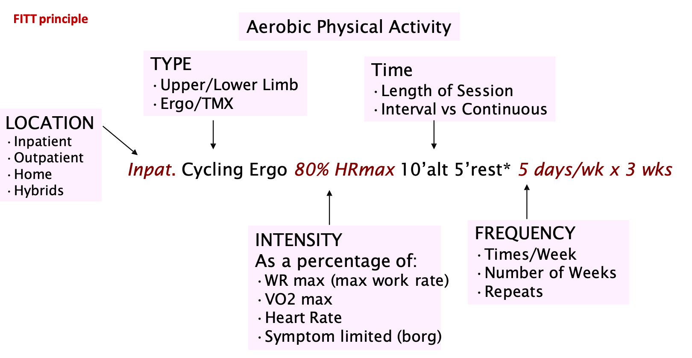
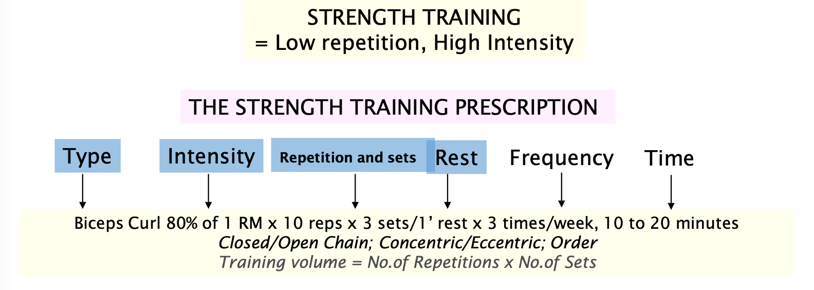
Duration and Frequency¶
Regular Recommendation
- As children and adolescents become adults and discontinue the athletic endeavors of school and college, primary prevention must include a plan for a lifetime of appropriate physical activity.
- Ideally, this activity should be performed for at least 30-60 minutes, 4-6 times weekly or 30 minutes on most days of the week. The frequency, duration, and intensity of activity should be individualized (exercise prescription) to personal satisfaction, mode, and progression.
- Persons with influenza syndromes or respiratory illnesses should decrease or stop exercise until they have recovered. If the recovery time is greater than 2-3 weeks, activity should be resumed at a lower level to compensate for the slight loss in training level.
- Maintenance of the cardiovascular training effects of exercise has been shown to be more related to the exercise intensity than to exercise frequency or duration. In other words, if the intensity is maintained, even though the exercise sessions are less frequent or shorter in duration, transient reductions in conditioning from the decreased exercise appears to be minimized.
Intensity Guidelines¶
- Borg perceived exertion scale
- Borg's relative perceived exertion (RPE) = work rate α VO2 α CP α HR α RPE
- Heart rate end points
- Reports of max HR declines at a rate of approximately 3-5% per decade independently of sex or fitness level; The equation of 220 - age implies a decay of 5-7% per decade, so age-adjusted max HR formula's "closeness" or validity is questionable.
- Clinical measurements obtained during the administration of the graded exercise test included in this longitudinal study resulted in the generation of a univariate prediction model: HRmax = 207 - 0.7 x age
- Karvonen formula = (maximal heart rate - resting heart rate)(40 - 85%) + resting heart rate
- Volume: Number of reps x number of sets
For strengthening exercise
-
Muscle-strengthening activities of moderate or greater intensit*y and that involve all major muscle groups on *2 or more days a week are also recommended.
-
Similar for adults with chronic health conditions and disabilities
-
Concept of reputation maximum (RM) and progressive resistive exercises; determination of 1 RM or multiples of an RM
-
The term 1RM only applies to weighted resistance exercise
-
1-RM – the greatest resistance/weight that can be moved through the full range of motion for a single repetition in a controlled manner with good posture
-
E.g. maximum amount of weight one can lift in a single repetition for a given exercise
-
Used as a primary means of measuring intensity
-
Defined as a percentage of that amount during each set of the exercise
-
No specific amount of time is recommended for muscle strengthening
-
To enhance muscle strength, one set of 8-12 repetitions of each exercise is
effective although 2-3 sets may be more effective
-
Improvements in muscle strength and endurance are progressive over time
-
Increases in the amount of weight or the days a week of exercising will result
in stronger muscles
Flexibility and neuromotor exercises
- Adults should do flexibility exercises at least 2 or 3 days each week to improve range of motion. Each stretch should be held for 10-30 seconds, to the point of tightness or slight discomfort. Repeat each stretch 2-4 times, accumulating 60 seconds per stretch.
- Neuromotor Exercise is recommended 2 or 3 days per week.
- Exercises should involve motor skills (balance, agility, coordination and gait), proprioceptive exercise training, and multifaceted activities (yoga) to improve physical function and prevent falls in older adults. Between 20 and 30 minutes per day is appropriate for neuromotor exercise.
Physical Exercise Intensity¶
- Energy expenditure is expressed by multiples of the metabolic equivalent of task (MET), where 1 MET is the rate of energy expenditure while sitting at rest.
- 1 MET equivalent to the resting metabolic oxygen consumption rate of approximately 3.5ml/kg/min.
- Light-intensity activities non-sedentary waking behaviour that requires less than 3.0 METs; examples include walking at a slow or leisurely pace (2 mph or less), cooking activities, or light household chores.
- Moderate-intensity activity requires 3.0 to 5.9 METs; examples include walking briskly (2.5 to 4 mph), playing doubles tennis, or raking the yard; 45- 63% VO2 max or 64-91% of max HR
- Vigorous-intensity activity requires 6.0 or more METs; examples include jogging, running, carrying heavy groceries or other loads upstairs, shovelling snow, or participating in a strenuous fitness class; 64-91% VO2 max or 77- 93% of max HR.
Overall¶
-
Adults should do at least 150 minutes (2 hours and 30 minutes) to 300 minutes (5 hours) a week of moderate- intensity,
-
for 75 minutes (1 hour and 15 minutes) to 150 minutes (2 hours and 30 minutes) a week of vigorous-intensity aerobic physical activity, or an equivalent combination of moderate- and vigorous-intensity aerobic activity.
- Preferably, aerobic activity should be spread throughout the week.
- For people who are physically deconditioned, morbidly obese or with other impairments, walking at 3-4 mph may actually be vigorous exercise.
- They can be taught to use HR, perceived exertion indices e.g. Borg Perceived Exertion Scale to monitor their activity
Technology in Rehabilitation¶
Application of technologies, engineering methodologies, or scientific principles to meet the needs of individuals with disabilities
Examples of rehabilitation technology include:
- Robotics
- Virtual reality
- Transcranial magnetic stimulation (TMS)
- Transcranial direct current stimulation (tDCS)
Assistive Tech vs Rehab Tech
- Product system or equipment that is used to increase, maintain or improve the functional capabilities of an individual with a disability
- Rehab technology is distinct from Assistive technology device
Neurorehabilitation¶
Problems
- Complexity of neurological conditions
- Based on the principles of neuroplasticity, motor learning/relearning • High intensity, repetitive, task specific practice
- Common issues : boring, repetitive, non-motivating and problems with long term adherence
Technology in neurorehabilitation
- Based in same principles
- Much evidence in stroke
- Technology can provide controlled, repeatable, intensive, interactive, motivating rehabilitation with feedback to the person and therapist
Robotics¶
What is Rehab robots
- Provides some form of physical support and mobility when the affected limb is no longer functional or has limitations
- Exoskeletal or end effector robotics
- Upper body extremities: usually consists of arms with various degrees of freedom, where the position of the end effector is often represented graphically on a computer screen
- Subtypes: fixed or overground
Advantages
- Longer and more intensive training sessions
- Real time feedback for higher motivation and compliance
- Physiologic gait pattern
- Easy measurement of patient’s progress
Example
- EksoGT suit
- Powered hip-knee exoskeleton
- iMOVE program in NUHS
- Stroke and spinal cord injury
- Patient outcome across the entire rehab continuum of care
Virtual Reality (VR)¶
What is VR
-
Computing technology that generates simulated or artificially three dimensional (3D) environment which imitates reality
-
Principles of VR are based on sensory-motor practice, adaptive learning, moderating brain reorganization through visual, auditory an
-
Immersive, semi-immersive or non-immersive
-
Immersive VR
- Virtual environment delivered by equipment worn by the user or the person is
situation within the virtual environment
- Strong sense of presence through the use of head-mounted displays, special gloves and large, concave screen projections to create the sense of immersion
-
Semi-immersive VR
- Computing system coupled with either a large screen monitor, large screen projector of multiple television projection systems, providing better feeling of immersion than non-immersive system
-
Non-immersive VR
-
- Usually 2-dimensional delivered through a computer screen
- The user can control what is happening on screen by using devices such as joystick, mouse or sensor
Use of VR in rehabilitation
- In cognitive rehabilitation
- Attention
- Unilateral spatial neglect
- Memory and spatial navigation
-
Executive functions and dual tasking
-
Upper limb motor rehabilitation
-
Promote motor relearning for different movements and functional tasks
-
Lower limb motor rehabilitation
-
Usually with the use of walking aids, treadmill with or without body weight
and robotics support
-
Help recover efficient walking in patients with lower limb motor impairment after stroke
Advantages of VR rehabilitation
- Safe environment
- Provide “natural” situation
- Gradual changes in task complexity while changing the extent of therapy intervention
- Objective measurement of behaviour and performance
- Increases motivation
Examples of VR system
-
Commercial low cost: Nintendo Wii, Microsoft Xbox with Kinect
-
Customized clinical systems: GestureTek IREX, SeeMe Rehab System, Jintronix
Neuromuscular Electrical Stimulation (NMES)
- Applying electrical stimulation above the motor threshold to cause a muscle contraction
- Internal or external electrodes
- Use can be Therapeutic muscle stimulation vs functional electrical stimulation (FES)
- Therapeutic NMES: repetitive stimulation applied to paralyzed muscles to minimize atrophy and/or maintain range of motion
-
FES: stimulation in coordinated sequence to assist the patient in performing a functional task e.g. transfers, ADLs or ambulation
-
Clinical Use
- Provides feedback to enhance voluntary muscle control
- Shoulder subluxation in hemiplegic limb
-
Maintain muscle mass after immobilization
-
Precautions
- Avoid stimulation over heart, neck, malignancies, pregnant uterus, or infected areas
- May interfere with pacemaker
- Sensory loss - may cause burns
Other Assistive Technology Devices
- Assistive technology for communication disorders
-
Augmentative and alternative communication (AAC) devices
- Non-electronic systems : pictures, whiteboard
- Electronicvoiceoutputsystem(digitalspeech): quick simple messages and can be activated by direct or indirect selection
-
Impaired mobility in the upper limbs
- Alternate computer keyboards: difference in keyboard size
- Voice recognition : writes by speaking into a microphone
- Onscreen keyboard and a head-mounted pointer
- Lower body mobility devices
- Manual or powered wheelchair
- Electronic aids to daily living (EADL) - smart home
- Controls audio-visual equipment, communication equipment, lights, appliances, doors within the home
- Controlled directly by pressing a button, voice command or indirectly by scanning
Future: tele-rehab
Spinal Cord Rehabilitation¶
Management¶
Spinal Cord Injury is a journey
- Prehospital care
- Emergency and acute care: spinal stabilization
- Subacute phase: rehabilitation of SCI
- Chronic SCI care
Types of SCI
- Incomplete tetraplegia
- Incomplete paraplegia
- Complete paraplegia
- Complete tetraplegia (most common)
Life expectancy estimates in spinal cord injury typically depends on
- Neurologic level of injury: paraplegia, low tetraplegia, high tetraplegia
- Degree of injury completeness: Motor function at any level
- Age at injury
- Ventilator dependency
Leading cause of death in SCI is pneumonia
Role of rehab physician in SCI
- Coordinating and leading a multidisciplinary team
- Functional goals setting
- Managing medical issues after SCI
- Continue follow up for chronic SCI management, returning to driving, return to work, permanent disability assessment etc.
Spasticity¶
Pathophysiology of Spasticity¶
Spasticity definition: Velocity dependent increase in tonic stretch reflexes (muscle tone)
- Upper motor neuron syndrome
- Positive signs and symptoms
- Enhanced stretch reflexes
- Increased muscle tone
- Exaggerated tendon reflexes
- Clonus
- Released flexor reflexes
- Babinski response
- Mass synergy patterns
- Negative signs and symptoms (performance deficits)
- Loss of finger dexterity
- Weakness
- Loss of selective control of muscles and limb segments
SPASM group in 2005 proposed an alternative definition
- A disorder of sensory -motor control resulting from UMN lesions, presenting as intermittent or sustained involuntary activation of muscles.
- 2 main factors contribute to resistance to movement
- Neurogenic component: overactive muscle contraction
- Biomechanical component: stiffening and shortening of the muscle and other soft tissues
Effects of spasticity¶
| ICF Level | Problem | Effect |
|---|---|---|
| Impairment | Muscle Spasm | Pain, difficulty with seating and posture, fatigue |
| Abnormal trunk and limb posture | Contractures, limb deformity, pressure ulcers / other tissue viability problems | |
| Pain | Distress and low mood; poor sleep patterns | |
| Activity | Loss of active function | Reduced mobility and dexterity, difficulty with sexual intercourse, difficulty with continence |
| Loss of passive function | Difficulty with care and hygiene, increased care burden, difficulty with seating or bed positioning | |
| Participation | Impact of any/all of the above | Poor self-esteem/self image, reduced social interaction, impact on family relationships, impact on work |
Factors that can worsen spasticity¶
- Bladder dysfunction – distension, infection
- Constipation,
- Poor posture management
- Cold (reduction in stimuli and noxious stimuli)
- Fatigue and mental stress
- Menstrual and pregnancy (noxious stimuli)
- Skin conditions
- Others – bracing, tight clothing
Evaluation of Spasticity¶
Common clinical assessments
| Problematic signs and symptoms | Assessment |
|---|---|
| Spasticity | Modified ashworth scale Tardieu scale |
| Clonus | Sustained, unsustained, none |
| Spasms | Spasm frequency scale |
| Skin integrity/hygiene | Number of pressure sores/time for hygiene |
| Disfigurement | Resting angle, serial photos/videos |

Modified Ashworth Scale
| Grade | Description |
|---|---|
| 0 | No increase in muscle tone |
| 1 | Slight increase in muscle tone, manifested by a catch and release or by minimal resistance at the end of the ROM when the affected part(s) is moved in flexion or in extension |
| 1 + | Slight increase in muscle tone, manifested by a catch, followed by minimal resistance throughout the reminder (less than half) of the ROM |
| 2 | More marked increase in muscle tone throughout most of the ROM, but affected part(s) easily moved |
| 3 | Considerable increase in muscle tone, passive movement is difficult |
| 4 | Affected part(s) rigid in flexion or extension |
- Does not reliably distinguish between spasticity and the changes of the viscoelastic properties of muscles
- Inter and intra rater reliability in the lower limb remains doubtful
Tardieu Scale
- Involves performing passive muscle stretch at 2 velocities. Slow and fast
- 2 parameters are measured at each velocity
- Spasticity angle – difference between the angles of arrest at slow speed and of catch and release (or clonus) at fast speed
- Quality of muscle resistance
Management of Spasticity¶
Principles
- Key Questions
- Does spasticity affect function - transfers, dressing, gait, etc
- Risk for development of complications - contractors, skin breakdown
- Does spasticity cause pain or discomfort - with brace or footwear
- Spasticity (impairment) is not the main reason for treatment. Instead, it is the impact of spasticity on a person’s ability to perform and well-being (function and participation)
- Spasticity is an impairment
- Some times we don't want to treat spasticity, because some patients may be ambulant due to the spasticity. Reducing the spasticity may unmask the negative symptoms and weaken patients.
- Significance, not severity, of spasticity should dictate need for treatment
- Treatment should be
- Gradual
- Aimed to achieve adequate balance between positive and negative symptoms
- Goal oriented programme
- Identify patient and caregiver objectives
- To improve gait, ADLs, hygiene
- To provide pain relief, easy of care
- To reduce spasm frequency
- Specific, meaningful, achievable, realistic
- Require multidisciplinary team working together with patient and family / carers
- Medical specialties e.g. rehab medicine physician, neurologists, orthopaedic surgeons
- Nurses
- Therapists: physiotherapist, occupational therapist,
- Other orthotist
Treatment options
- Identify and eliminate aggravating factors
- Urinary infection from catheterisation
- Pressure sores from whe
- Physical and occupational therapy
- Therapeutic exercises - individualised stretching program
- Braces / splints
- Serial casting
- Electrical stimulation
- Reduction in pain and spasticity, improved ROM
- Pharmaceutical interventions
- Oral antispasmodic
- Baclofen: GABA-B agonist
- Tizanidine: partial a2 agonist,
- Benzodiazepines
- Gabapentins
- Dantrolene sodium
- Injections of botulinum toxin or phenol/alcohol
- Intrathecal therapy is not standard in Singapore but standard in the States
| Focal | Multifocal | Regional | Generalised | |
|---|---|---|---|---|
| Botulinum toxin | ✓ | ✓ | ✓ | |
| Phenol/ alcohol neurolysis | ✓ | ✓ | ✓ | |
| Oral medications | ✓ | ✓ | ✓ | |
| Intrathecal therapy | ✓ | ✓ |
- Surgical intervention
- Surgical (tendon lengthening, tender, release), selective dorsal rhizotomy
- Use surgery is severe cases